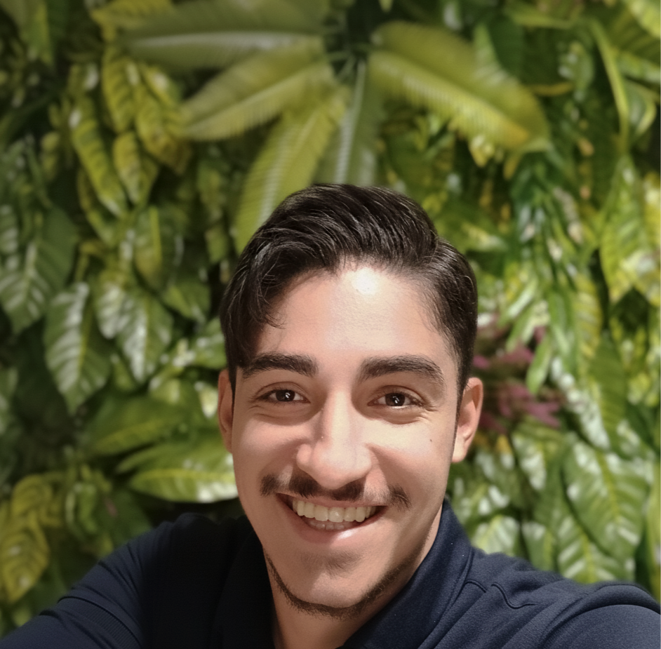
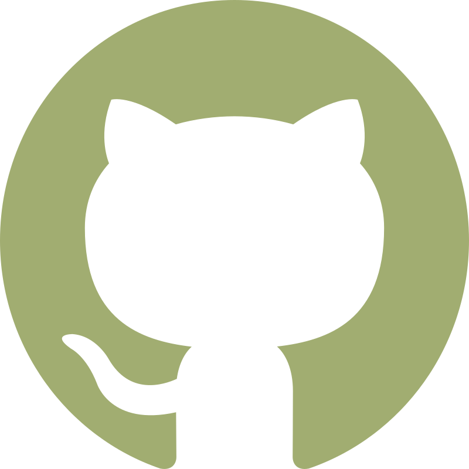

API / Backend
API Authentication Flask
Flask tabanli kimlik dogrulama akislarini ve API guvenlik yapisini ornekleyen backend projesi.

Dicle Universitesi Elektrik ve Elektronik Muhendisligi ogrencisiyim. 2018'den bu yana yazilim gelistirme alaninda aktif olarak bireysel projeler uretiyor, farkli dillerde script ve moduller gelistiriyorum. Gomulu sistemler, FPGA, mikrodenetleyici tabanli otomasyon cozumleri ve temel Full-Stack web gelistirme konulariyla ilgileniyorum; Front-End, Back-End ve API mimarisi tarafinda kendimi surekli ileri tasiyorum. Kisisel motivasyonumla teknik birikimimi buyuturken, genel kulturumu gelistirmeyi ve farkli kulturleri tanimayi da bu yolculugun onemli bir parcasi olarak goruyorum.
Flask tabanli kimlik dogrulama akislarini ve API guvenlik yapisini ornekleyen backend projesi.
Gorev yonetimi uzerine kurulu, temel CRUD endpoint'leri ve sade servis mimarisi iceren Flask API uygulamasi.
Python OOP prensipleriyle gelistirilmis, temel bankacilik operasyonlarini modelleyen kapsamli bir sistem denemesi.

Goz AtHTML ve CSS temelleriyle ilk adimlarimi attim; temel seviyede Front-End web siteleri gelistirerek pratik kazandim.
Back-End, algoritma ve programlama altyapim uzerine yogunlastim; bilgisayar aglari alaninda genel kulturumu gelistirmeye calistim. Universite egitiminin baslamasiyla birlikte C ve Python dillerinde algoritmalar yazarak problem cozme refleksimi guclendirdim.
Arduino projeleriyle temel mikrodenetleyici gelistirme alanina adim attim ve donanim-yazilim etkilesimini daha yakindan deneyimledim.
Basta FastAPI ve Flask olmak uzere Python tabanli Back-End projeleri gelistirerek API tasarimi ve servis kurgusu tarafinda ilerleme kaydettim.
Guncel olarak FPGA dili ile donanim muhendisligi ve gomulu sistemler alaninda ilerleme katetmeye basladim.